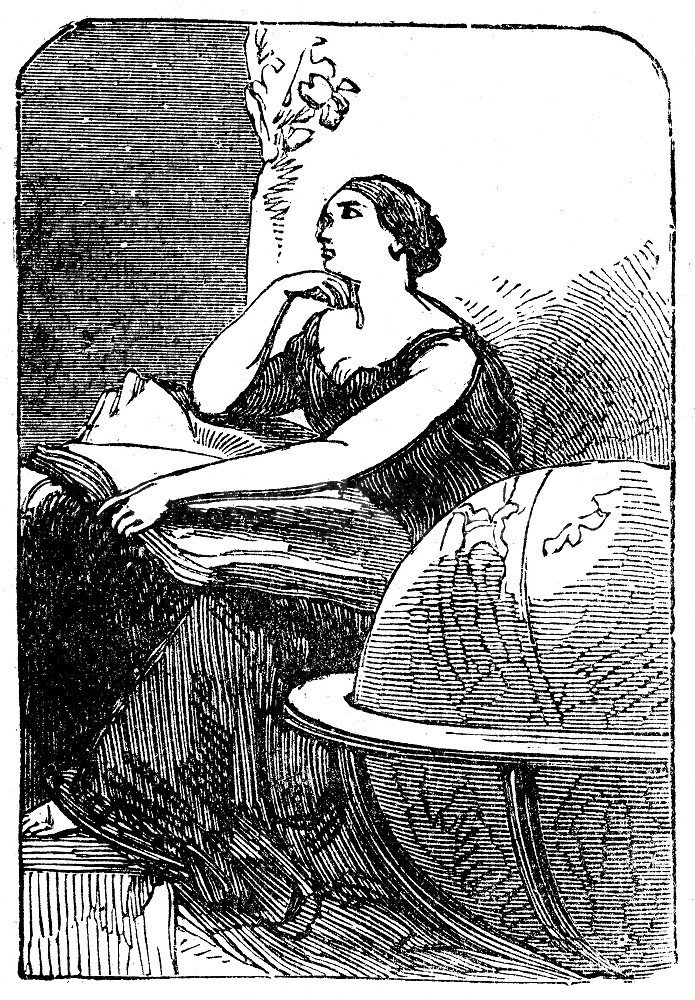
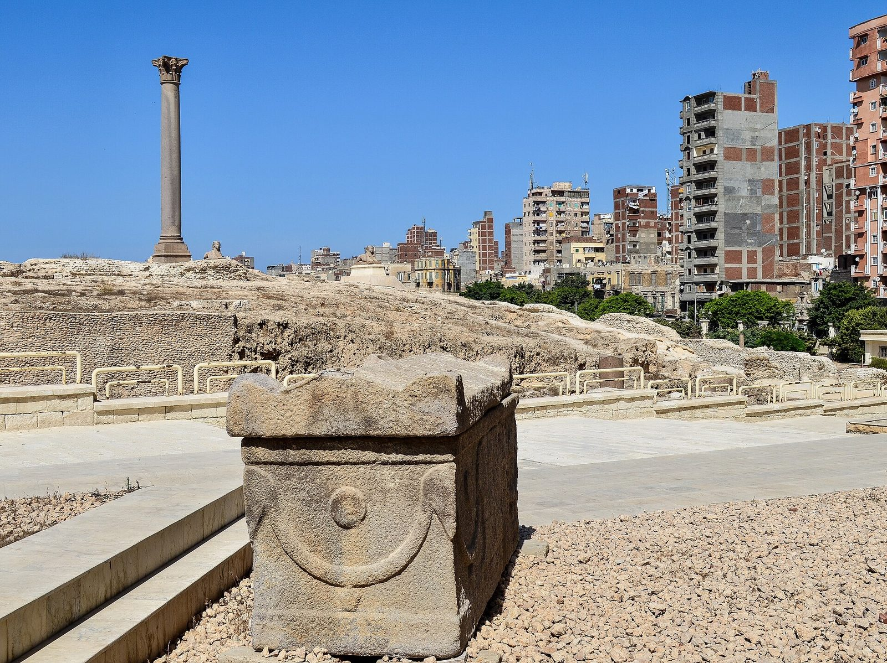
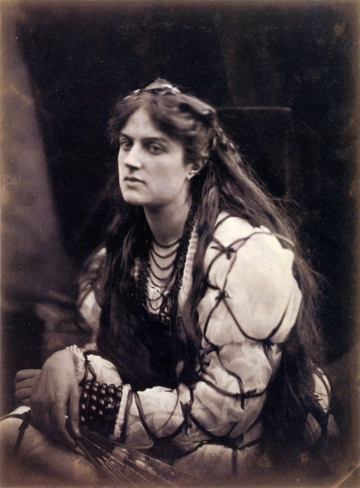
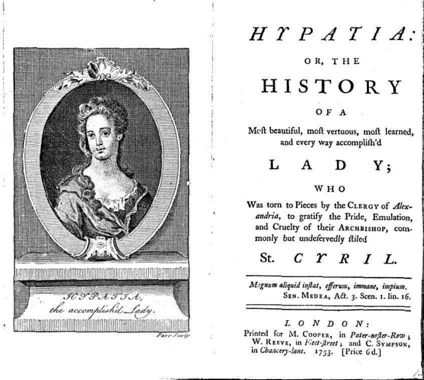

Unit 7 · Women in ancient Greece · Lesson 17
Agora (2009): Hypatia and how film represents ancient women
A philosopher who lived in Roman Alexandria, after this unit’s period ends, and a modern film about her. What is a film evidence of, and how far can we test it against the record?
Year 11 Ancient History · Present with → or space · Read on a phone with R

Images: Unknown, about 1850 (Public domain). Full details on the last slide.
Review · books closed · 6 minutes · press K for the timer
Five questions from Lesson 16
- Berenice II’s lock: which poem tells the story, who wrote it, and what can’t it show? Catullus 66, by the Roman poet Catullus (1st century BCE), adapting a Greek poem written for the Ptolemaic court (Callimachus’s Lock of Berenice): Conon saw “a lock of hair from Berenice’s head, in the celestial light” (Smithers). The vow of her hair and Conon’s naming of the constellation are usually accepted; the lock speaking and rising to the stars is the court poet’s compliment. It shows how a queen’s story was told, not what she did as queen.
- Cleopatra’s coin: what does the ANU bronze coin show, and what can’t it? Bronze, minted at Alexandria, 44–30 BCE (the museum’s dating): her diademed portrait, an eagle on a thunderbolt, a double horn of plenty and the legend ‘of Queen Kleopatra’. The museum reads the double horn as co-regency with her son Caesarion. It can’t show how she ruled or how her subjects saw her: it is her own message.
- Phile of Priene: who was she, and why is she an exception? The first woman stephanephoros (chief magistrate) of Priene, a Greek city in Ionia (not Egypt), about 100–50 BCE; she paid for its reservoir and aqueducts from her own resources. An exception: Greek citizen women did not hold political office (priesthoods were religious offices), and one woman in one city can’t show that other women held office.
- The Canopus decree: who passed it, when, and what does it do for Berenice’s daughter? It is the hieroglyphic text of the decree of an assembly of Egyptian priests on 7 March 238 BCE (Egyptian evidence, about a Greek royal family). It deifies the dead princess Berenice: the priests vote her festivals and a divine image, and name the statue “Berenice, mistress of virgins.” It shows what the priests chose to honour.
- Writing · Do this Judge and this Resolve state the same degree? Judge: “Judged by how many women it shows holding office, Phile’s inscription shows Greek women’s political roles only to a limited extent, because it names one woman in one city.” Resolve: “Ultimately, judged by how many women it shows holding office, her inscription shows Greek women’s political roles largely.” No. The criterion is the same, but the degree changes: only to a limited extent, then largely. Fix the Resolve so that it repeats the Judge’s degree: “… shows Greek women’s political roles only to a limited extent.” (Lesson 15: a Judge and a Resolve state the same degree and the same criterion.)
Mark your own answers in a different colour. Which question did you find hardest?
Learning intentions and success criteria · 2 minutes
Today’s goals
- analyse how Agora represents Hypatia and Alexandria
- evaluate a modern representation against the historical record
- explain what Agora changes, with evidence from Socrates Scholasticus
- explain how the film depicts a learned woman among men, and why
- judge a representation as evidence of its makers’ time, not of the past
Outside this unit’s period: the unit studies Greek women from about 500 to 30 BCE. Hypatia lived in Roman Alexandria about four centuries later. She is a test case for how film represents ancient women. Syllabus outcomes: AH-11-04 accounts for the different perspectives of individuals and groups in their historical context · AH-11-05 analyses different types of sources for evidence to support a historical account or argument · AH-11-07 communicates historical understanding, applying historical knowledge, terms and concepts. Life Skills: AH-LS-07 identifies different perspectives of the past · AH-LS-11 communicates information about the past using historical terms and concepts.
Note-making · the routine for the whole course
How to structure your notes
questions and key terms, written after
short phrases, arrows (→ leads to), abbreviations (c. = about; CE = Common Era)
- 1A new page for each lessonA cue column about a quarter of the page wide; title and date at the top; room for a summary at the bottom.
- 2Listen and look, then writeDon’t copy while an extract is playing. Phrases, not sentences; a date and a maker for every source.
- 3Write your own notes at each ✎ checkpointThen compare with the model notes, one row at a time. Add what you missed in a second colour.
- 4Write the cue questions afterwardsUse exam verbs: identify, describe, explain, evaluate. To revise, cover your notes and answer the cues.
- 5Finish with a three-sentence summaryTwo checkpoints today: Hypatia and the record · how the film differs. Your 6-mark answer goes in your answer booklet, not your notes.
Key vocabulary · add to the unit word wall
Words for judging a representation
| Writing terms | Meaning |
|---|---|
| Evaluate | NESA: ‘Make a judgement based on criteria. Determine the value of.’ In History (department advice): state the criteria and judge against them. |
| Summarising noun | A noun that sums up the last idea to link sentences, such as “this image”, “this portrayal” or “this change”. |
| Content terms | Meaning |
| Representation | A depiction of the past shaped by its maker’s time and purpose, such as a film. |
| Anachronism | Something placed in the wrong time, such as Kepler’s ellipses given to Hypatia. |
| Content terms | Meaning |
|---|---|
| Hypatia | A philosopher and mathematician of Roman Alexandria, killed in 415 CE. |
| Classification (MA 15+) | A legal rating: not suitable for people under 15, who may see the film only with a parent or adult guardian. |
| Added today | Meaning |
| Serapeum | The great temple of the god Serapis in Alexandria, destroyed or closed in 391 or 392 CE (the date is debated). |
| Prefect | A senior Roman official who governed a city or province. Orestes is the prefect in Socrates’s story. |
1 · I do · frame it · Roman Alexandria, outside this unit’s period · some dates are approximate or debated
Hypatia: about four centuries after our period ends
- about 355 or laterHypatia is born. The date is debated: Dzielska says about 355, others later.
- 391 or 392The Serapeum, a temple of Serapis in Alexandria, is destroyed or closed. Sources and historians give both years.
- about 413Synesius, a Christian who had studied with her, dies: most likely in 413. He was bishop of Ptolemais from about 410.
- March 415Hypatia is killed in Alexandria.
- about 439–450Socrates Scholasticus writes his Church History. Book 7, chapter 15 is about her: today’s record.
- 1609Kepler publishes his finding that planets move in ellipses.
- 2009Agora, a film directed by Alejandro Amenábar (Spain): today’s representation.
Why study a woman who lived after our period? Think first.
- 1A test caseThe unit studies Greek women from about 500 to 30 BCE. Hypatia is not part of that content: she is a case for practising a skill.
- 2A representationNESA’s support material suggests “examining representations of ancient Greek women in modern media”. A film is one.
- 3A record to test it againstSocrates Scholasticus wrote about her. We test the film against him, and ask what each is evidence of.
1 · I do · the record · a Christian church historian, about 25–35 years after her death
What does the record say about her?
There was a woman at Alexandria named Hypatia, daughter of the philosopher Theon, who made such attainments in literature and science, as to far surpass all the philosophers of her own time. Having succeeded to the school of Plato and Plotinus, she explained the principles of philosophy to her auditors, many of whom came from a distance to receive her instructions. … she not unfrequently appeared in public in presence of the magistrates. Neither did she feel abashed in coming to an assembly of men. … Yet even she fell a victim to the political jealousy which at that time prevailed. For as she had frequent interviews with Orestes, it was calumniously reported among the Christian populace, that it was she who prevented Orestes from being reconciled to the bishop.
Written about 439–450 CE, about 25–35 years after March 415 · New Advent, newadvent.org/fathers/26017.htm · “calumniously” = by slander · the rest of the chapter tells how a crowd killed her; it is not read in class · “auditors” = listeners, students
What does Socrates say about her teaching and her place among men, and what does he blame? Think first.
- 1Her teaching and standingDaughter of the philosopher Theon; head of a Platonist school; students came from a distance; she appeared before the magistrates and was not “abashed” among men; all men admired her.
- 2What he blamesIn this chapter, “political jealousy”: a rumour among the Christian crowd about her “frequent interviews with Orestes”, the prefect, and the bishop, Cyril.
- 3The limitsOne Christian writer, 25–35 years later, reporting what the crowd said. In this chapter he does not mention any discovery in astronomy, or a pupil called Orestes.
Notes checkpoint 1 of 2
Hypatia and what the record says
2 · We do · 16 minutes in all · short extracts, then the grid after each · a written summary of each is below
Three extracts: what to watch for
Hypatia teaches astronomy. The film has her test an old idea, Aristarchus’s, that the Earth moves round the Sun, and later work out that the planets’ paths are ellipses.
Watch for: what she discovers, and who is with her.
Hypatia teaches a room of young men in Alexandria. Orestes and Synesius are among them. Davus, an enslaved man in her father’s household, listens too.
Watch for: who is in the room, and how the men treat her.
Cyril, the bishop of Alexandria, reads from the First Letter to Timothy, chapter 2 (a New Testament letter in Paul’s name), to a gathered crowd, and speaks against women who teach.
Watch for: what is read, and who it is aimed at.
If you are reading and not watching, use the summary under each extract, Socrates 7.15 (the record), and fill in the same grid. These summaries are written for this lesson. No pictures from the film are used in these materials: the extracts are played in class.
2 · We do · pairs · 9 minutes in all · fill each row straight after its extract · a cell holds a fact from the extract or from Socrates, then your own reason
Scene | film | record | why the change?
| Extract | What the film shows | What the record says | Why might the film change it? |
|---|---|---|---|
| A · her astronomy | |||
| B · her students | |||
| C · Cyril and 1 Timothy |
Write “not shown” when a source does not say. The last column is your own reason, with a “probably”: what could the film-makers have wanted the scene to do? No source answers it for you.
| Row | The record |
|---|---|
| A | Socrates: “attainments in literature and science”. Aristarchus (3rd century BCE) had proposed that the Earth moves round the Sun. No source in this lesson gives Hypatia any discovery about ellipses. Kepler published ellipses in 1609. |
| B | Socrates: students “from a distance”; “frequent interviews with Orestes”. Synesius most likely died about 413. |
| C | Socrates: “political jealousy”; a rumour about Orestes and the bishop. 1 Timothy 2:12 is a New Testament letter written in Paul’s name (many scholars think by a later follower). |
2 · We do · 3 minutes · check your grid · her work and her circle · facts only, no verdict
What the film changes, and what the record says
| Change | What the film shows | The record |
|---|---|---|
| An astronomer’s discovery | Hypatia tests Aristarchus’s idea that the Earth moves round the Sun, then works out that planets move in ellipses. | Aristarchus of Samos proposed that the Earth moves round the Sun in the 3rd century BCE (Archimedes reports it). No source in this lesson credits Hypatia with testing it, or with ellipses. Kepler published ellipses in 1609, nearly 1,200 years after her death. Socrates says only “literature and science”. |
| Orestes | Orestes is one of her students. | Socrates says she had “frequent interviews with Orestes”, the prefect. He does not call him her pupil, and no source in this lesson does. |
| Synesius | Synesius is alive in 415 and is called bishop of Cyrene. | He was bishop of Ptolemais, from about 410, and most likely died about 413, before she was killed. |
| Davus | Davus, enslaved in her father’s household and later freed, is a main character. | He is an invented character: no source mentions him. |
Cold call: which change reveals the film-makers’ purpose?
Any change with no source behind it. For example, the ellipse discovery, which no source in this lesson gives her, probably serves an argument about science and religion. An invented character or an invented pupil works the same way: someone chose to add it.
2 · We do · 2 minutes · the city, her faith and her gender · four changes: three not shown in class, and the Cyril scene
The city, her faith, and a woman who teaches
| Change | What the film shows | The record |
|---|---|---|
| The Serapeum | The Serapeum’s library is presented as if it were the great Library of Alexandria (one brief line calls it the “daughter” library: confirm on preview). | It was a temple of Serapis, destroyed or closed in 391 or 392 CE, more than 20 years before she died. Whether a library still stood there is not settled in the sources seen. |
| Cyril and Paul | Cyril condemns her as a woman who teaches, reading 1 Timothy 2. | 1 Timothy 2:12 (KJV), a New Testament letter in Paul’s name: “But I suffer not a woman to teach, nor to usurp authority over the man, but to be in silence.” Socrates gives “political jealousy” as the cause. |
| Her faith | The film gives her no religion (confirm on preview). | Socrates: she “succeeded to the school of Plato and Plotinus”. Historians call her a pagan Platonist philosopher; a review reports Watts (2017) arguing that she did not practise pagan ritual magic (theurgy), that religious divisions in Alexandria mattered less than many historians have claimed, and that most of her students were Christians. |
| Her death | The film softens it. It is not shown in class. | Socrates records that a crowd killed her. His account is violent and is not read here. |

Images: Hatem Moushir (CC BY-SA 4.0). Full details on the last slide.
Notes checkpoint 2 of 2
How the film differs from the record
3 · Writing focus · 6 minutes · I do → We do → apply
Writing focus: evidence of its makers’ time, not of the past
Evaluate (NESA): ‘Make a judgement based on criteria. Determine the value of.’ Department advice: say what it shows, then judge it by a criterion, evidence of its makers’ time, not of the past, linked by a summarising noun.
Worked example, written for this lesson, on Thornycroft’s statue (Unit 4):
Thornycroft’s group shows Boadicea in a scythed chariot, with her daughters crouched beside her. This image of a warrior-mother, begun in 1856 under Queen Victoria and set up in 1902, reveals more about Victorian and Edwardian pride in empire and in a queen than about the Iceni queen herself.
Describe · what the representation shows
Summarising noun · “this image” sums up sentence 1, then adds when it was made
Evaluate · judged by a criterion: its makers’ time, not the past
Your first two sentences: what the source shows, then one that starts with a summarising noun and judges it. Don’t copy the Thornycroft sentences or option B.
“[The film, made by … in …,] shows …. This [summarising noun] reveals …, rather than …”
Your Writing toolkit (booklet pages 3–4): cohesion.
The ellipse scene. Vote on “3, 2, 1, show”: which sentence best evaluates it as evidence of its makers’ time?
- AThis discovery shows what astronomers of her own day knew, because the film has her work it out in front of her students.
- BThis discovery, which no source we have seen gives her, probably reveals more about the film-makers’ interests than about ancient astronomy.
- CThis discovery is useless as evidence, because a film made in 2009 is too modern to be trusted about anything.
- DThis discovery is reliable evidence, because Socrates says she excelled in science, so she must have worked it out.
B names a criterion, hedges with “probably” and opens with a summarising noun. A treats a film as proof. C dismisses it instead of weighing it. D stretches “science”: Socrates names no discovery.
3 · You do · 16 minutes in all · deconstruct and check first (3 minutes)
A 6-mark usefulness question: deconstruct it first
How useful is Agora (2009) for understanding attitudes towards Hypatia as a woman and a teacher? 6 marks
Deconstruct it: what does this question ask you to do?
| Step | This question |
|---|---|
| Verb | How useful: not a glossary word (NESA calls “how” and “to what extent” self-explanatory). For a source it asks you to evaluate: NESA, ‘Make a judgement based on criteria. Determine the value of.’ Judge its value, reliability and limitations for this question (department advice). |
| Topic | Attitudes towards Hypatia as a woman and a teacher: what people thought of her, and of a woman who taught. Not the events of her life. |
| Limits | Agora (2009) is the source to judge; the evidence you have seen is the extracts or summaries, Socrates 7.15 and your grid. Keep every hedge. |
| Do | 6 marks: one developed paragraph with a judgement (department advice). Provenance phrase → value for this question → the makers’ purpose and perspective → “reliable for … but not for … because …” → a limitation → end decisively. The OVPRL routine on page 2 of your booklet, in short form. |
Check first: what must a “how useful” answer judge, and what must it not do?
It judges the source’s usefulness for this question only: its value, reliability and limitations. It is not a review of whether the film is good, or a list of its mistakes.
3 · You do · timed 12 minutes · press K, click 12 and start · your grid, summaries and Socrates 7.15 are open
Write your 6-mark answer
How useful is Agora (2009) for understanding attitudes towards Hypatia as a woman and a teacher? 6 marks
- Open with the Writing focus: who made the film and when, what it shows, then a sentence that starts with a summarising noun and judges it (the first 2 minutes).
- Give its value for this question, its makers’ probable purpose, and “reliable for … but not for … because …”. Use evidence from your grid, with its date and maker.
- Name one limitation, then end with a decisive judgement.
Compare Agora’s Hypatia with Socrates’s: how does each use her death to make an argument about its own world? Text only: Socrates writes that “nothing can be farther from the spirit of Christianity than the allowance of massacres, fights, and transactions of that sort”. The film softens her death, and it is not shown in class.
Use your grid and the record card. Word bank for strength:
Frame (form only): “Agora presents … as …; this reveals … rather than …”
3 · You do · 1 minute · after the timer · check your own answer
Check your answer against what a strong answer includes
Read your answer through with a different-coloured pen. Circle your summarising noun. Underline your “reliable for … but not for … because …” sentence. Tick each point you can find, then add one missing point in the margin.
Cold call: which summarising noun did you use, and what did it sum up?
- A provenance phrase: who made the source, when and for whom.
- A purpose: what the makers probably wanted, with a relating verb (“presents … as …”).
- A judgement for this question: “reliable for … but not for … because …”, not “accurate” or “inaccurate”.
- Evidence from the record, with its date and maker, to test the film.
- A limitation, with a hedge matched to the evidence.
- A decisive ending that answers the question.
Check · 4 minutes · pens down · vote with your A, B, C or D card on “3, 2, 1, show”
Which statement is in the ancient record of Hypatia?
- AShe proved that the Earth orbits the Sun, and then taught the proof to her students in Alexandria.
- BHer pupil Orestes, the prefect of Alexandria, quarrelled with the bishop, Cyril, and refused his offers of peace.
- CShe was the daughter of the philosopher Theon, and she explained philosophy to students who came to her.
- DSynesius, by then a bishop, saw her death in the city, and wrote about it in a letter afterwards.
Socrates calls her “daughter of the philosopher Theon” and says she explained the principles of philosophy to students, many from a distance. A is wrong: no source in this lesson gives her that discovery, and ellipses are Kepler’s of 1609. B is wrong: Socrates mentions her “frequent interviews with Orestes” but never calls him her pupil. D is wrong: Synesius most likely died about 413, before she was killed in March 415.
Check · exit ticket · 4 minutes · collected
Exit ticket: one way Agora changes the record, and why
Write one way Agora changes the record, with the evidence that shows it, and one reason the film-makers probably made the change. Use “probably” or “may”.
Hand it in with your answer. Then tick the “I can” statements you can do, and circle the one you are least sure of (1 minute).
- One change named precisely, with the record’s evidence: for example, an invented discovery (ellipses, Kepler 1609) that no source gives her, or Synesius alive in 415 when he most likely died about 413.
- A reason, hedged: for example, probably to argue about science and religion. Any change with its evidence and a reasoned purpose is as good.
Finish your notes If time · or at home
Summary: three sentences
- Who was Hypatia, and why is she outside this unit’s period?
- What does Socrates 7.15 say, and what does the film change?
- What did you judge the film to be evidence of, and by what criterion? (your own)
Hypatia was a philosopher and teacher in Roman Alexandria, born about 355 CE or later and killed in March 415, about four centuries after the period this unit studies. Socrates Scholasticus, a Christian church historian writing about 25 to 35 years later, says she surpassed the philosophers of her time, taught students who came from a distance, and fell victim to “political jealousy”; a film made in 2009 changes some of this, for example by giving her a discovery that no source in this lesson credits to her and by making Orestes her pupil. How useful the film is depends on the question asked of it, and the judgement is the writer’s own.
Practice and review · 1 of 4 · true, false, justify
True or false? Justify your answer
- 1Socrates Scholasticus wrote within a few years of Hypatia’s death, so his account is a contemporary eyewitness record. False — he wrote about 439–450 CE, about 25–35 years after March 415, and reports what a crowd said. He is a Christian church historian, not an eyewitness.
- 2Socrates says Hypatia appeared in public in the presence of the magistrates. True — “she not unfrequently appeared in public in presence of the magistrates” (Zenos’s translation of 7.15).
- 3A film that gives Hypatia Kepler’s ellipses of 1609 contains an anachronism. True — an anachronism is something placed in the wrong time. Kepler published ellipses in 1609, nearly 1,200 years after she died.
- 4Synesius most likely died about 413 CE, before Hypatia was killed. True — he most likely died in 413, though the date is not certain; she was killed in March 415.
- 5The Serapeum was destroyed after Hypatia’s death in 415 CE. False — it was destroyed or closed in 391 or 392, more than 20 years before she died (the date is debated).
- 6To evaluate a representation, you list what it shows and stop there. False — NESA: ‘Make a judgement based on criteria. Determine the value of.’ You judge it by a criterion, such as how far it is evidence of its makers’ time.
Practice and review · 2 of 4 · identify, then evaluate a photograph
Exercises 1 and 2
Identify the writer whose Ecclesiastical History 7.15 describes Hypatia. (1 mark)
Socrates Scholasticus (about 439–450 CE).
Write one sentence that evaluates this photograph as evidence of its makers’ time, not of Hypatia. Start your second clause with a summarising noun.
Cameron’s photograph shows a Victorian model in a ribboned gown and strings of beads, posed as Hypatia; this portrait probably reveals more about a Victorian photographer’s interest in strong women than about the philosopher who died in 415 CE.

Images: J. M. Cameron, 1868 (Public domain). Full details on the last slide.
Practice and review · 3 of 4 · compare two accounts of who is to blame
Exercise 3 · extension
Compare who Toland’s title page blames for Hypatia’s fate with where Socrates 7.15 says the rumour about her spread, and say what the difference suggests about Toland’s purpose. NESA: compare = ‘Show how things are similar or different.’
… to gratify the Pride, Emulation, and Cruelty of their Archbishop, commonly but undeservedly stiled St. Cyril.
1753 reprint of his 1720 tract · the long “s” is shown as “s”
- Who each blames, attributed: Toland, the clergy and “their Archbishop”; Socrates, a rumour among “the Christian populace”.
- When each was made: Socrates about 25–35 years later; Toland about 1,300 years later.
- A hedged purpose: the title page attacks “the Clergy” and an “Archbishop”, so Toland may be using her story against the clergy of his own day.
- A limit: only a title page was seen.

Images: Parr, 1753 (Public domain). Full details on the last slide.
Practice and review · 4 of 4 · cover your notes and answer from memory
Quick checks
- What does “evaluate” ask you to do? NESA: ‘Make a judgement based on criteria. Determine the value of.’ In History (department advice): state the criteria and judge against them.
- What is a representation, and what is it evidence of? A depiction of the past shaped by its maker’s time and purpose, such as a film. It is evidence of its makers: their time, choices and purpose, and, only when tested against the record, of the past.
- Why study Hypatia if she lived after this unit’s period? She is a test case, not content: NESA’s support material suggests “examining representations of ancient Greek women in modern media”. We test the film against Socrates 7.15.
- What does Socrates 7.15 say about her, and how long after her death did he write? She was the daughter of the philosopher Theon, “succeeded to the school of Plato and Plotinus”, taught students from a distance, and appeared before the magistrates; he blames “political jealousy”. He wrote about 439–450 CE, about 25–35 years after March 415.
- Name three things Agora changes, with the record’s evidence. For example: a discovery of ellipses (Kepler, 1609; no source credits her); Orestes as her pupil (Socrates: “frequent interviews”); Synesius alive in 415 (most likely died about 413); Davus (invented); the Serapeum as the Library (a temple, destroyed or closed 391 or 392).
- What does a summarising noun do? It sums up the last idea to link two sentences, such as “this image” or “this portrayal”: “Thornycroft’s group shows …. This image of a warrior-mother … reveals …”
Sources and credits
Where everything comes from
Socrates Scholasticus, Ecclesiastical History 7.15: trans. A. C. Zenos (1890), New Advent (public domain); only the first half of the chapter and the two sentences about “political jealousy” and the rumour are quoted, with one sentence from its end on the extension card. 1 Timothy 2:12: King James Version, eBible.org (public domain). John Toland, Hypatia (1720; London reprint, 1753), the title page, as scanned on Wikimedia Commons (public domain). Review questions from Lesson 16: Catullus 66, trans. L. C. Smithers (1894), Perseus (CC BY-SA 3.0 US); the Canopus decree, trans. E. A. W. Budge, attalus.org; I.Priene 208, attalus.org; the Classics Museum, Australian National University, catalogue entry 1976.01 (text only). NESA, Glossary of key words; NESA, Ancient History 11–12 Syllabus Syllabus support (2024), p. 7.

Edward J. Watts, Hypatia: The Life and Legend of an Ancient Philosopher (Oxford University Press, 2017), as reported in Aistė Čelkytė’s review, Bryn Mawr Classical Review 2017.10.07: Watts’s argument is summarised in the lesson’s own words, and his book was not seen. Maria Dzielska, Hypatia of Alexandria (Harvard University Press, 1995), for the birth date “about 355”, through the program. Dates for the Serapeum and for Synesius: Wikipedia’s articles “Serapeum of Alexandria” and “Synesius”, read on 27 November 2026, used as leads. Victoria and Albert Museum, photograph by Julia Margaret Cameron, “Hypatia”, 1141-1963, for the date. Thornycroft’s statue: as in Unit 4, Lesson 13. Agora (dir. Alejandro Amenábar, Spain, 2009) is the film whose representation of Hypatia is studied; no images from it appear on this site.
Outcomes and content: NSW Education Standards Authority (NESA), Ancient History 11–12 Syllabus (2024). © NESA.
- Hypatia imagined: a wood engraving of about 1850, artist unknown (Wikimedia Commons) · Unknown artist (about 1850) · Public domain · source
- The Serapeum site and Pompey's Pillar, Alexandria, Egypt, 2017 (Wikimedia Commons) · Photo: Hatem Moushir · CC BY-SA 4.0 · source
- 'Hypatia', a photograph by Julia Margaret Cameron, 1868 (the Victoria and Albert Museum dates the photograph 1868) · Julia Margaret Cameron (1868) · Public domain · source
- Frontispiece and title page of John Toland's tract on Hypatia, London, 1753 reprint of the 1720 work (Wikimedia Commons) · Unknown (1753); engraver: Parr · Public domain · source

_,_photo_by_Hatem_Moushir_39.jpg){kind=link}

All images are public domain or openly licensed, and were resized for the web. Each is shared under the licence shown. Every picture of Hypatia here was made centuries after her death: none is a portrait from her lifetime.